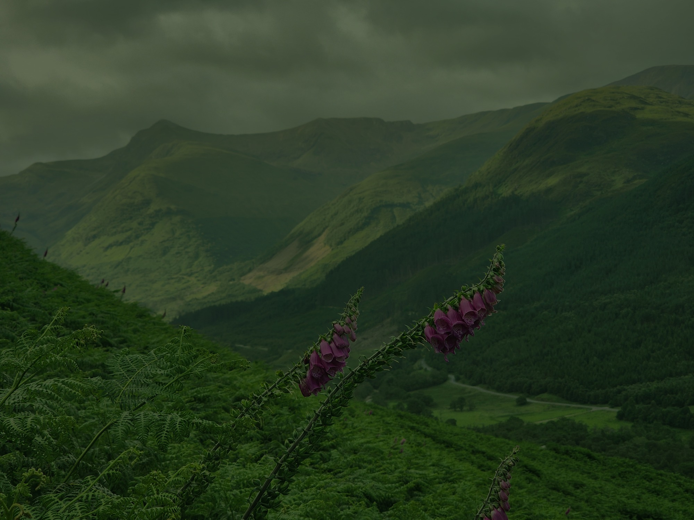
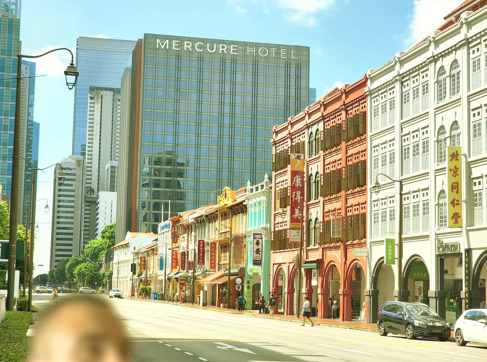
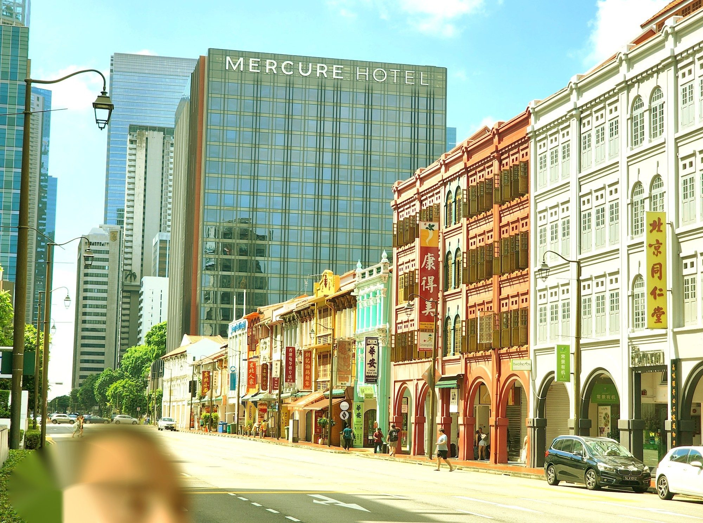
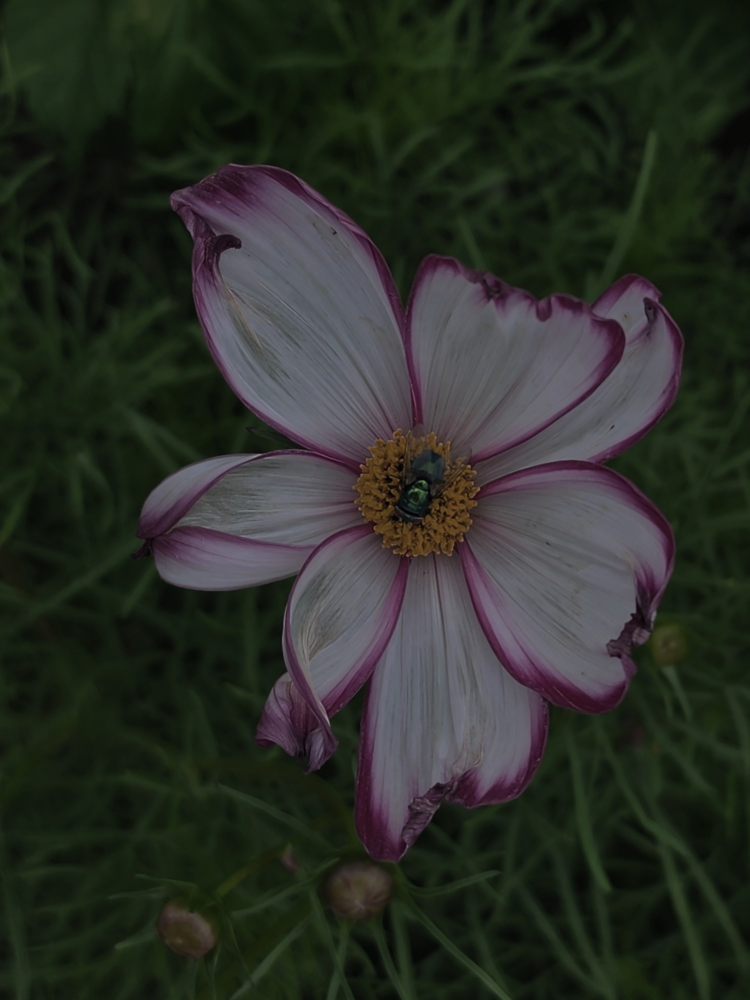

PROCESS & RESULTAT
Bildredigering
Här visas tre exempel från bildserien. Varje redigering har ett tydligt syfte och jämförs med originalbilden.
01 · LJUS & FÄRG
Landskapet
Jag har ljusat upp bilden och förstärkt kontrasten och färgmättnaden försiktigt. Det gör detaljerna i landskapet tydligare samtidigt som den gröna färgskalan behålls naturlig.


02 · OBJEKTBORTTAGNING
Gatumiljön
Det suddiga huvudet i bildens nedre vänstra hörn har tagits bort. Området har fyllts i med närliggande bildinformation för att minska störningsmomentet och låta blicken fokusera på byggnaderna och gatan.


03 · FÄRGFÖRÄNDRING
Blomman
Blommans ljusa kronblad har fått en blåviolett ton. Jag har behållit variationerna i ljus och skugga så att kronbladens form och struktur fortfarande syns.
